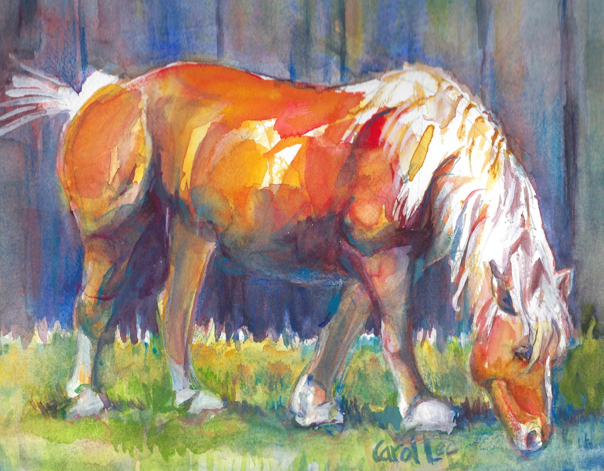
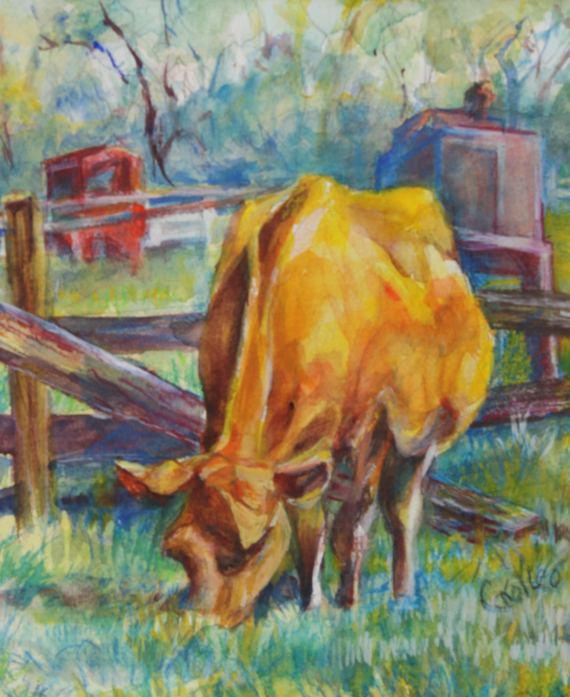
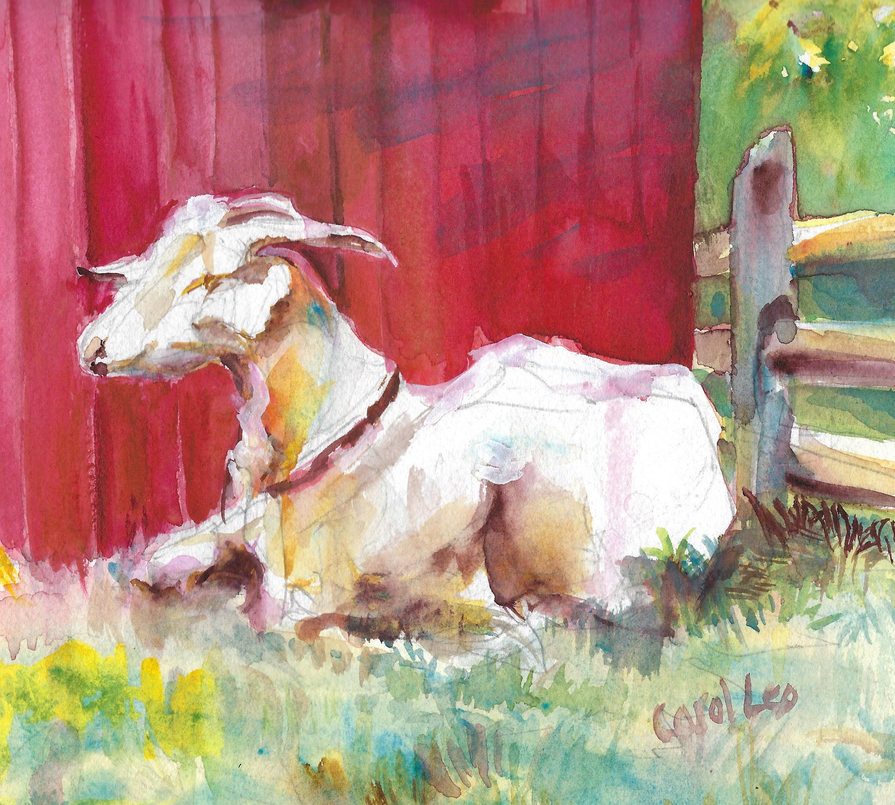
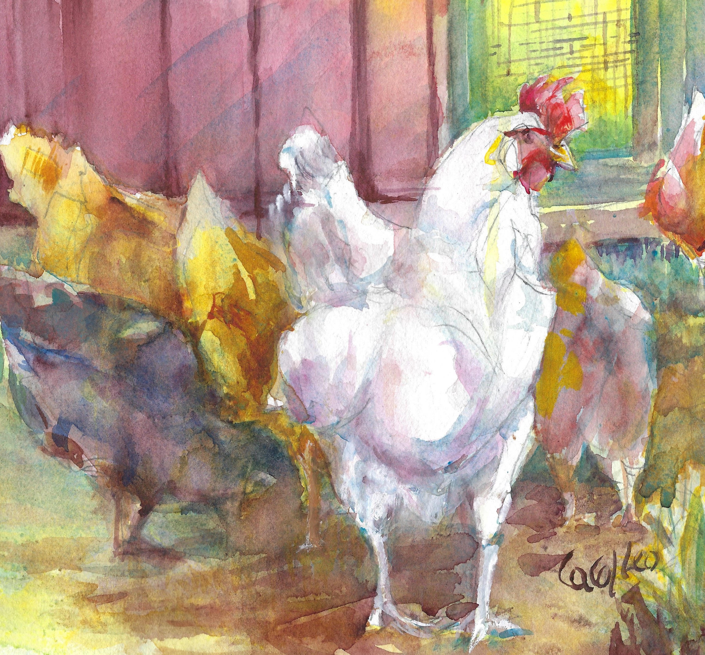
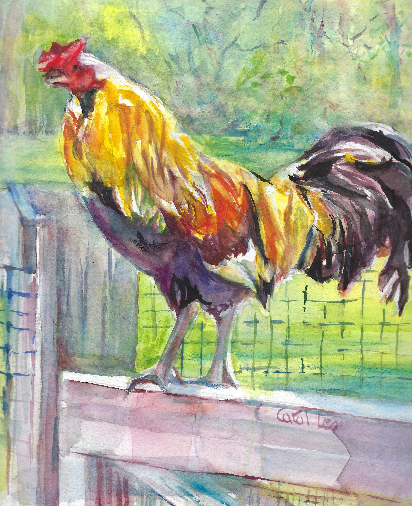
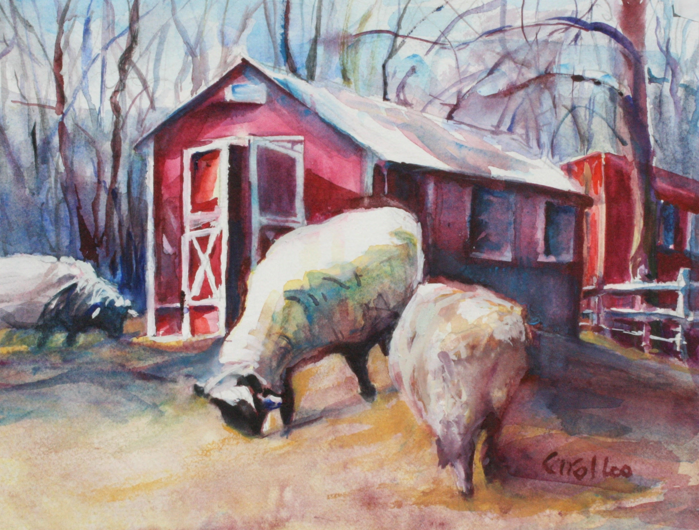

<DOCTYPE html>

<html>

<head>
<title>carouselride</title>
<script>
//The maximum global variable must equal
//the number of thumbnails in the gallery.

var maximages = 6;

var startpath = "imagescopy/OxC"

//Filename extension of each image.

var extension = ".jpg"

//Calculates which picture to show next based on x
 //which is either 1 or -1.
 function calcslide(x) {
 //Get file name of image that's showing.
 var currentimage = document.getElementById("bigpic").src;
 //Locate file name extension in current image source string.
 var dotat = currentimage.indexOf(extension);
 //Grab two digits to the left of that file name extension.
 var stringnumber = currentimage.substr(dotat - 2, 2);
 //Convert stringnumber string to number and add x.
 var nextnum = parseInt(stringnumber) + x;
 //If nextnum is less than 1, wrap around to maximages.
 if (nextnum < 1) {
 nextnum = maximages;
 }
 //If nextnum is greater than maximages, wrap around to 1.
 if (nextnum > maximages) {
 nextnum = 1;
 }
 //Create two-digit string from number (leading zero if less than 10).
 var twodigitnum = ("0" + nextnum).slice(-2);
 //Create new file name from two-digit number string.
 var showimg = startpath + twodigitnum +extension;
 showbig(showimg);
 }


//Show clicked image in the large img tag

function showbig(pic) {
document.getElementById("bigpic").src = pic;

}


</script>
<style>
/*CSS code to style the pictures */

.carousel {
text-align: center;


}

#bigpic {
height: 400px;

}


.thumbs img {
height:150px;
width: 150px;
}

img.arrow {
  height: 40px;
  width: 50px;
  margin-bottom: 25px;

</style>

</head>


<body>

<!--HTML to display the pictures -->

Most Recent Painting - Farm Friends (Oxon Cove Park)

<div class="carousel">



<div class="thumbs">



<br>





<br>


</body>
</html>


